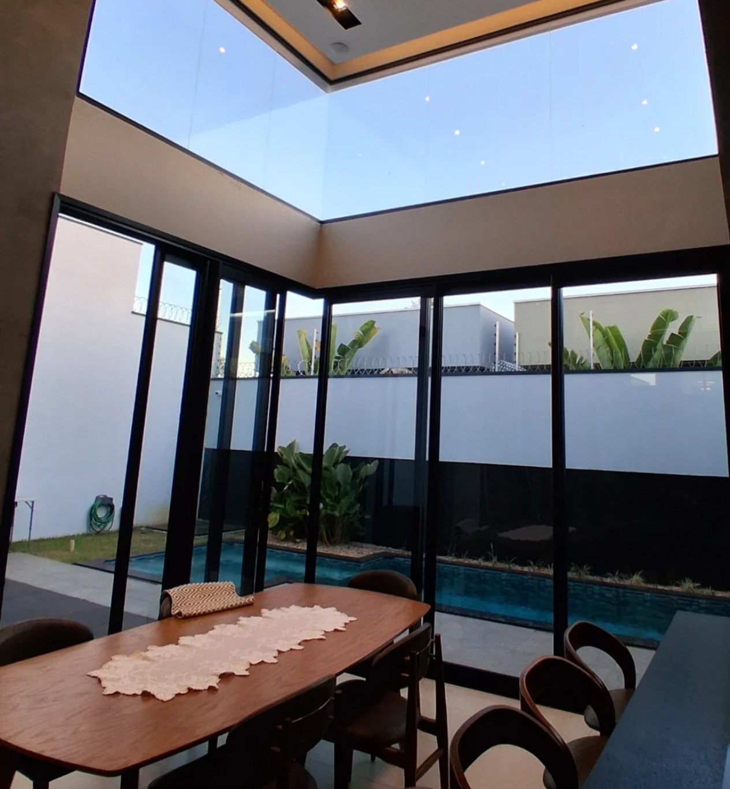

Seu espaço.
Uma nova
forma de brilhar.
Vidros, fachadas e placas solares com o cuidado que valoriza cada detalhe do seu imóvel.
Segurança em alturaEquipe com certificação NR-35
Tecnologia de limpezaÁgua ionizada e desmineralizada
Perto de vocêAtendimento em todo o Tocantins
O cuidado certo.
Para cada superfície.
Da transparência dos vidros ao desempenho dos painéis solares, cada serviço começa com atenção ao que o seu espaço precisa.
Vidros e
fachadas
Limpeza técnica para remover sujeiras e recuperar a boa apresentação de vitrines, janelas e fachadas.
CLAREZA EM CADA DETALHEPlacas
solares
Limpeza com água desmineralizada para remover impurezas que interferem na captação da luz solar.
CUIDADO COM SEU INVESTIMENTORestauração e
pós-obra
Atenção a manchas nos vidros, restauração de esquadrias e limpeza técnica para a finalização da sua obra.
VALORIZAÇÃO DO SEU ESPAÇOO resultado
fala por si.
Conheça trabalhos e serviços publicados pela Brilho Fort.
Veja mais no Instagram ↗Mais que limpeza.
Valorização do
seu espaço.
Somos especialistas em limpeza de vidros, fachadas e painéis solares em Palmas e região, com atendimento em todo o Tocantins.
Unimos técnica, equipamentos e cuidado na execução para atender residências, empresas, condomínios e propriedades rurais.
Técnica para cada desafio
A superfície e o tipo de sujeira orientam a escolha do tratamento.
Segurança do início ao fim
Trabalho em altura com equipe certificada e atenção à execução.
Dicas técnicas e
guias de limpeza.
Artigos práticos para ajudar na conservação de condomínios, empresas e residências em Palmas.
Ver todos os 21 artigos ↗
Guia Completo para Cronograma de Limpeza em Condomínios
O cronograma de limpeza de condomínio é uma ferramenta de gestão estratégica que organiza, padroniza e distrib...

Guia Completo de Limpeza Pós-Obra: Como Fazer Certo
A limpeza pós-obra é um serviço técnico e especializado realizado logo após o término de uma construção ou ref...

Dicas Práticas para Limpeza Eficiente das Áreas Comuns do Condomínio
A limpeza das áreas comuns do condomínio é o conjunto de atividades realizadas para manter os espaços comparti...
O próximo espaço
a brilhar é o seu.
Conte o que você precisa e solicite um orçamento com a nossa equipe.